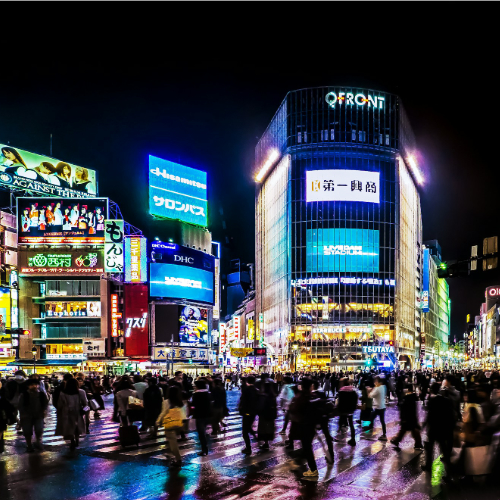

Shibuya Crossing – Tokyo’s Iconic Intersection
Shibuya Crossing (渋谷スクランブル交差点) is one of the most famous and busiest pedestrian crossings in the world. Located in the heart of Shibuya, Tokyo, this iconic intersection is a symbol of the city’s energy, vibrancy, and unique urban culture. Every day, thousands of people cross in multiple directions, creating an awe-inspiring spectacle that’s become a must-see for visitors to Tokyo.
A World-Famous Pedestrian Crossing
Shibuya Crossing is renowned for its chaotic yet synchronized flow of people crossing from all directions at once. The intersection is surrounded by massive video screens, neon lights, and billboards, adding to its vibrant atmosphere. Whether you’re crossing with the crowd or simply watching from a nearby café, it’s an unforgettable experience and a perfect place to capture the essence of Tokyo’s urban landscape.
Shibuya – A Thriving Shopping and Entertainment Hub
Shibuya is more than just a crossing. The district is known for its trendy shopping streets like Center Gai and Shibuya 109, offering everything from cutting-edge fashion to quirky accessories. Whether you're browsing high-end brands or looking for the latest fashion trends, Shibuya has something for every style. The area is also packed with entertainment options, from arcades to karaoke bars, making it a lively spot day and night.
Shibuya Nightlife and Dining
As night falls, Shibuya transforms into one of Tokyo’s most vibrant nightlife districts. Whether you’re looking for upscale bars with stunning city views or hidden izakayas tucked away in narrow alleys, Shibuya offers an array of dining and nightlife experiences. Don't miss the chance to experience Shibuya's nightlife, with its famous clubs, music venues, and unique dining options.
How to Get to Shibuya Crossing
- 🌸 From Tokyo Station: Take the JR Yamanote Line (approx. 10 minutes) to Shibuya Station
- 🌸 Direct access from Shibuya Station to the crossing and surrounding area
- 🌸 Opening hours: Shibuya is open year-round, but the crossing is most impressive during peak times such as 6 PM to 9 PM
- 🌸 Best photo spots: Shibuya Scramble Square (observation deck), Starbucks at Tsutaya, and the pedestrian crossing itself
Why Shibuya Crossing Is a Must-See for Tokyo Travelers
Shibuya Crossing is a living, breathing symbol of Tokyo’s hustle and bustle, perfectly capturing the dynamic energy of this global metropolis. Whether you're in town for the first time or a seasoned traveler, witnessing the spectacle of Shibuya Crossing is an essential Tokyo experience.
Tags: Shibuya Crossing, Tokyo landmarks, Shibuya district, Tokyo shopping, Shibuya nightlife, Tokyo sightseeing, Shibuya entertainment
Planning to visit Shibuya Crossing?
To get the most immersive and insightful experience, we recommend booking a certified local private guide from our team. All our guides are licensed professionals officially recognized by the Japanese government, offering personalized tours tailored to your interests. Please contact your selected guide in advance to confirm availability and get expert assistance for your trip.